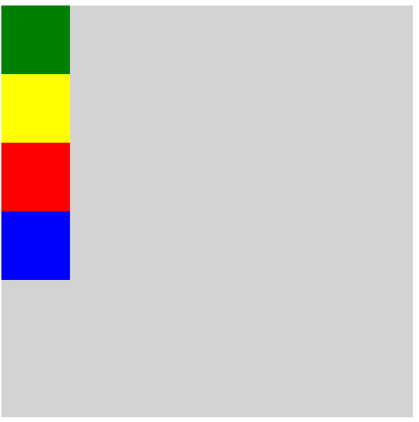

Warsztaty Webowe grupa średniozaawansowana
Dla tych, którzy nie brali udziału w grupie początkującej polecam serdecznie zapoznać się z materiałami o Flexboxie i modelu pudełkowym. Link TUTAJ
Do pozycjonowania używamy atrybutu position, który przyjmuje następujące wartości:
Przygotuj plik html o nazwie cw3.html. Umieść w nim element div będący jasnoszarym kwadratem o boku 600px, a w nim 4 elementy div, które będą kwadratami o boku 100px i miały różne kolory (na przykładach są standardowe kolory w tej kolejności: green, yellow, red i blue). Będziemy z nich korzystać w następnych zadaniach
W rozkładzie normalnym każdy element blokowy jest umieszczany poniżej poprzedniego. Jest to normalny sposób, w jaki przeglądarki traktują elementy HTML, nie musimy zaznaczać w CSS-ie, że elementy mają być tak rozmieszczane; można jednak to zrobić poprzez nadanie wartości static właściwości position.
Sprawdź czy układ elementów zmienił się po dodaniu do div'ów position: static? Jak myślisz dlaczego?
Umiejscawianie względne umożliwia przesuwanie elementów względem miejsca, w którym zostały umieszczone przy użyciu rozkładu normalnego.
Za pomocą position: relative spróbuj odtworzyć poniższe ustawienie. Zastanów się jakie position powinien mieć szary kwadrat (niebieski kwadrat celowo wystaje poza szary jakby co)
Domyślnie, element HTML, do którego zostanie dodana właściwość position: absolute; nie pozostawia po sobie żadnej dodatkowej przestrzeni, dzięki czemu elementy, które go otaczały, nie reagują w żaden sposób na niego oraz na jego pozycję początkową.
Domyślnie, element wyświetlony z pozycji absolutnej będzie znajdował się w miejscu swojej pozycji początkowej, chyba że zmienimy to za pomocą właściwości CSS, które służą do ustalenia pozycji takiego elementu HTML, czyli za pomocą właściwości top, right, bottom lub left.
Zamień elementom z poprzedniego zadania position na absolute. Co spowodowało, że ich układ drastycznie się zmienił. Względem czego elementy są ustawione? Czy position szarego kwadratu ma zanczenie?
Umiejscawianie ustalone jest jednym z typów umiejscawiania bezwzględnego. W przypadku tego sposobu umiejscawiania położenie elementu jest ustalone względem okna przeglądarki. Kiedy przewijamy zawartość strony, element pozostaje w tym samym miejscu. Do określania miejsca w oknie przeglądarki, w którym zostanie umieszczony element, używane są poznane już właściwości przesunięcia.
Ustaw wysokość szarego kwadratu na powiedzmy 2000px. Ustaw jednemu z pozostałych kwaratów position na fixed i zobacz jak się zachowuje względem przeglądarki
W przypadku stosowania umiejscawiania innego niż rozkład normalny pudełka elementów mogą na siebie nachodzić. Wówczas element, który jest umieszczony bliżej końca dokumentu HTML, jest wyświetlany powyżej elementów wcześniejszych. Jeżeli zależy nam na kontroli wzajemnego przesłaniania różnych elementów, możemy to zrobić przy użyciu właściwości z-index. Wartościami tej właściwości są liczby, a im większa będzie jej wartość, tym „wyżej” element zostanie umieszczony. Właściwość z-index jest także czasami nazywana kontekstem stosu, gdyż bloki elementów mogą tworzyć stos wzdłuż osi Z.
Właściwość float pozwala usunąć element z rozkładu normalnego strony i umieścić go możliwie jak najdalej na lewo lub prawo wewnątrz rodzica tego elementu. Cała pozostała treść umieszczona wewnątrz takiego rodzica będzie otaczała ten pływający element. W razie zastosowania właściwości float należy także określić szerokość elementu pływającego. Jeżeli tego nie zrobimy, wyniki uzyskiwane w różnych przeglądarkach mogą być niespójne; w efekcie element pływający najprawdopodobniej zajmie całą szerokość elementu, w którym został umieszczony (czyli tak, jakby był rozmieszczony w normalny sposób).
W wielu układach stron ich poszczególne elementy są wyświetlane jeden obok drugiego. Bardzo często w celu uzyskania takiego efektu używa się elementów pływających. W przypadku ich zastosowania ich wysokość może mieć znaczący wpływ na miejsce, w którym element zostanie umieszczony.
Korzystając z właściwości clear, możemy poinformować przeglądarkę, że żaden element (umieszczony wewnątrz tego samego rodzica) nie powinien się stykać z lewą/prawą krawędzią danego elementu. Właściwość ta przyjmuje wartości left, right, both oraz none.
{kind=link}
{kind=link}